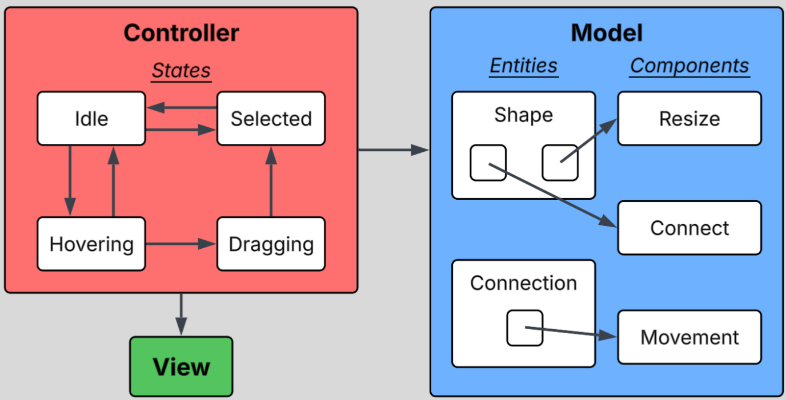
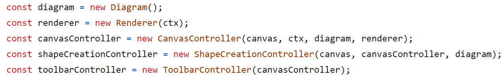
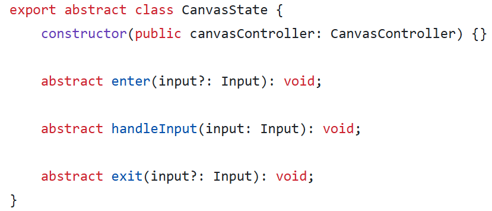
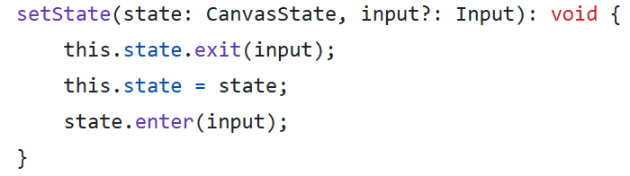
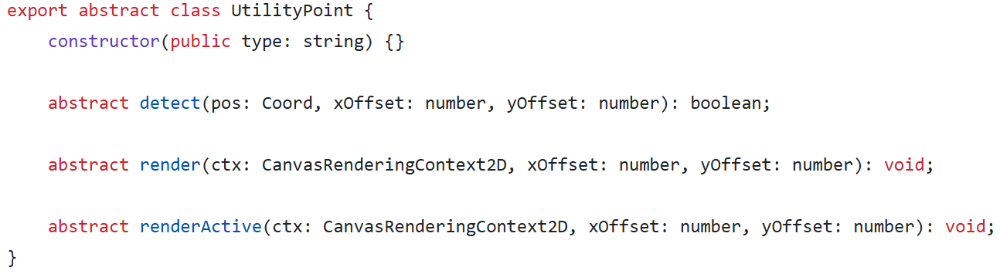
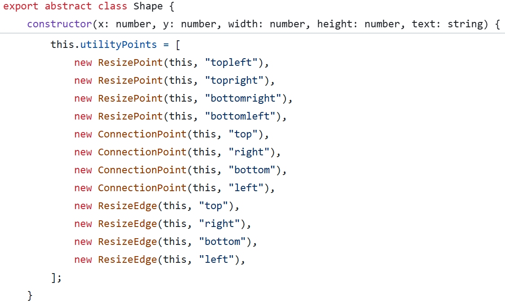

This section displays artifacts relating to the architectural design of the website's code.
The core design patterns utilized in the diagram editor architecture are model-view-controller, state pattern, and entity component system. Model-view-controller separates the concerns of data logic, display, and control logic. By separating these concerns, the code becomes decoupled and extendible. The state pattern implements the controller. States allow the controller to alter its behavior depending on user input. Each state is its own class, meaning it makes specific behaviors isolated and their development easier. The entity component system defines entities by the components they associate with. In the context of the diagram editor, this means that the ability to resize and create lines defines a shape. Isolating capabilities makes them easier to develop and attach to the necessary entities. All three design patterns contribute to the performance of the web application by decoupling and isolating sections of code. So, it becomes easy to identify specific sections of code that execute frequently and optimize them.

The controller additionally utilizes the observer pattern to notify states and other controllers about updates.
Each component of the model-view-controller (MVC) pattern is implemented in separate classes. However, there are multiple controller classes, with each one being responsible for a different aspect of the diagram editor. The model (“Diagram” class) and view (“Renderer” class) stand on their own, while the controller requires references to them. This is because the controller handles the control logic that utilizes information from the model and the view. In ElysianMap specifically, the “CanvasController” class is the main controller, while other controllers contain a reference to the canvas controller. This allows all controllers to communicate with each other. Sub-controllers can update the main controller, and the main controller can notify all sub-controllers using the observer pattern.

When a user performs an action in the diagram editor, the “CanvasController” modifies the necessary data in the “Diagram,” and reflects the change to the user via the “Renderer.”
Each state is implemented into its own class. The parent class for all canvas states is “CanvasState.” All states have four functions, the constructor, “enter,” “handleInput,” and “exit.” The constructor initializes all necessary class variables. “handleInput” implements the behavior of the state. Based on the input passed in to the “handleInput” function, the state executes its behavior. The “enter” function runs at the start of a state, and the “exit” function runs at the end of a state.

For an example of an “enter” and “exit” function, assume a state that modifies the style of the cursor. Upon entering this state, the “enter” function updates the cursor to a specified design, and when leaving this state, the “exit” function resets the cursor to default.
Explanation

Subtitle
Explanation

Subtitle
Explanation

Subtitle